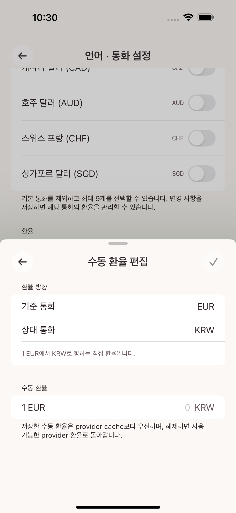

설정의 기본 통화는 예산·통계·순자산을 계산하는 기준 통화다. 관심 통화는 자주 쓰는 외화(여행, 해외 결제 등)를 미리 등록해두는 목록이다. 두 설정 모두 iPad·Mac의 "장부 환경" 섹션, iPhone은 해당 화면으로 바로 진입한다.
해외 승인 문자를 붙여넣거나 외화 금액을 직접 입력하면, 그 금액(원거래 통화)을 기본 통화로 환산하는 화면이 뜬다. 환산에 쓰인 환율은 그 거래에 그대로 기록되며, 이후 환율이 바뀌어도 이미 저장된 과거 거래의 금액은 바뀌지 않는다.
서로 다른 통화의 평가손익이나 환율 변동분은 순자산 계산에 자동으로 합산되지 않는다. 순자산은 각 계정이 실제로 기록한 거래(이미 환산된 기본 통화 금액)만으로 계산된다.
설정 → 환율 화면에서 통화별로 있는 수동 환율 편집 버튼을 누르면 기준 통화·견적 통화를 확인하고 환율 숫자를 직접 입력하는 화면이 뜬다. 한 번 저장한 수동 환율은 이후 자동 조회 결과보다 항상 우선하며, 수동 값을 해제하면 다시 자동 조회 환율로 돌아간다.
자동 갱신이 부분적으로 실패하면 "○○개 환율을 가져오지 못했습니다. 오프라인일 수 있으며 저장된 환율은 그대로 유지됩니다"라는 안내가 뜨고, 기존 환율은 조용히 0이나 빈 값으로 바뀌지 않는다. 저장 자체가 실패하면 "환율을 저장하지 못했습니다. 기존 환율을 유지했으며 다시 시도할 수 있습니다"라는 별도 안내가 뜬다.
